Eficácia total
Melhorar os resultados produtivos e econômicos ao longo da vida do equipamento.

Gestão da manutenção / roteiro de estudo
Pessoas e equipamentos no mesmo sistema de melhoria: reconhecer perdas, restaurar condições e sustentar resultados.
8 conceitos16 recursos visuais24 perguntas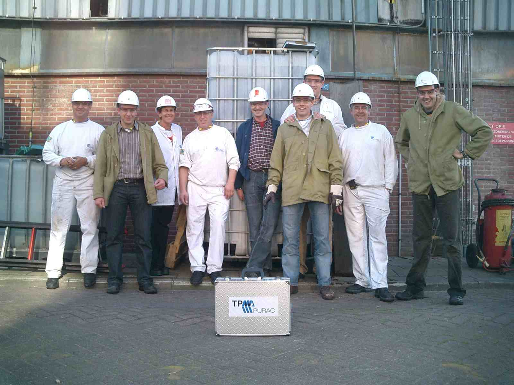
Fundamentos e origens
TPM é um sistema de gestão que busca eliminar continuamente perdas, desenvolvendo as pessoas, os equipamentos e os processos.
Melhorar os resultados produtivos e econômicos ao longo da vida do equipamento.
Combinar conservação, prevenção de falhas e melhorias de projeto e de operação.
Envolver produção, manutenção, engenharia, apoio e direção, com responsabilidades definidas.
A origem está ligada à evolução da manutenção produtiva no Japão e à participação de toda a organização. Equipamentos confiáveis ajudam a manter o fluxo de produção, a qualidade e a entrega.
A experiência do operador, a especialização da manutenção e as decisões de engenharia precisam se encontrar em problemas concretos.
Marcos históricos conferidos em Denso e JIPM [1–3]. As datas divergentes dos anexos correspondem a momentos diferentes dessa evolução.
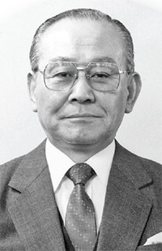
Seiichi Nakajima
O texto de origens da aula destaca sua contribuição para a eliminação das perdas e o envolvimento de toda a empresa. Retrato extraído desse documento.
Arquitetura da TPM
Os pilares organizam frentes de trabalho. Um problema real costuma exigir ações em mais de uma frente.
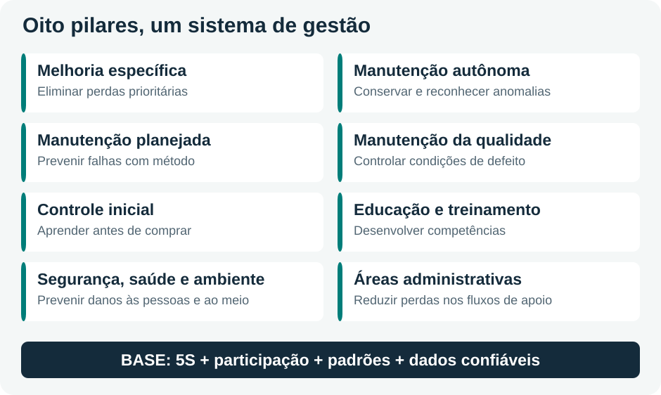
Autônoma conserva as condições básicas; planejada organiza a intervenção técnica; qualidade controla condições que geram defeitos.
Educação desenvolve competências. Controle inicial incorpora o aprendizado ao projeto, à compra e à entrada em operação.
Melhoria específica enfrenta perdas prioritárias. Segurança e áreas administrativas ampliam a atuação para todo o processo.
Enxergar antes de agir
Cada perda reduz a disponibilidade, o desempenho ou a qualidade. Essa associação ajuda a interpretar o OEE.
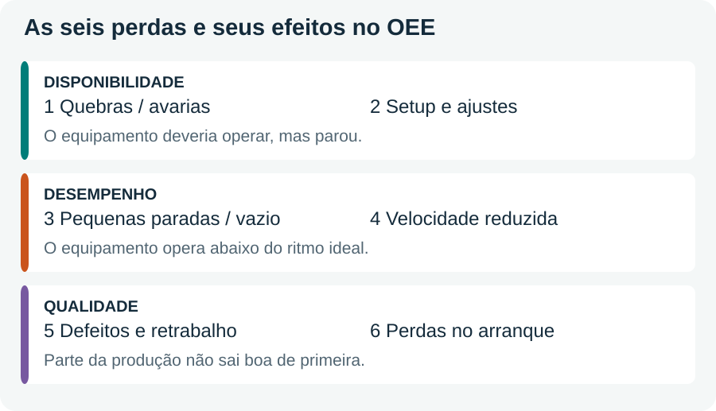
| O que observar | Exemplo | Ação a investigar |
|---|---|---|
| Tempo parado | Quebra ou troca de produto | Confiabilidade, manutenção planejada e redução do setup |
| Ritmo abaixo do ideal | Interrupções breves e ciclos lentos | Causas das microparadas e condições de operação |
| Produção sem aprovação inicial | Refugo ou retrabalho, inclusive no arranque | Condições do processo e da qualidade |
Conservar e reconhecer anomalias
O operador desenvolve capacidade para cuidar e inspecionar seu equipamento, dentro de suas competências e das tarefas autorizadas.
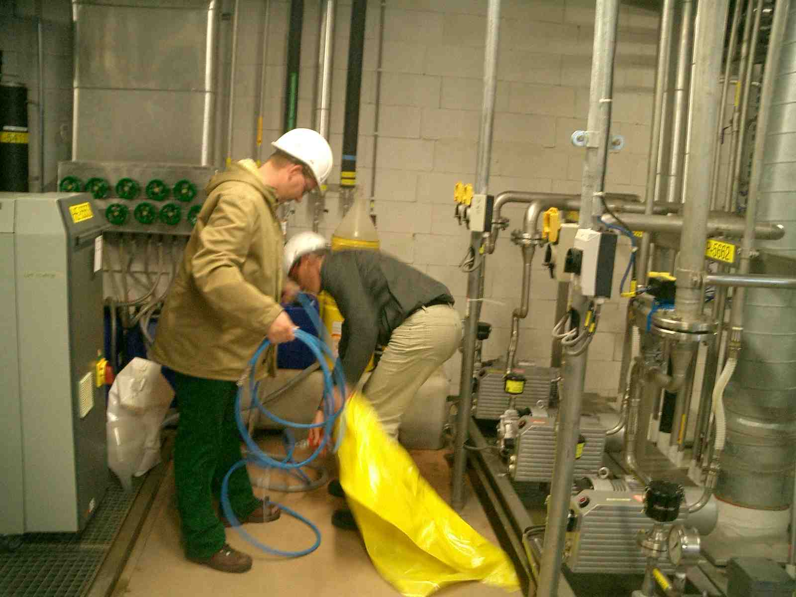
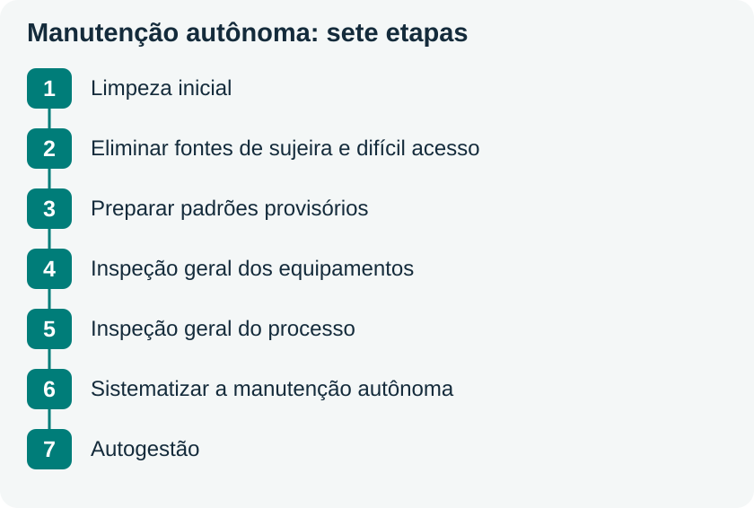
Convenção da aula: anomalia que o operador tem competência, habilidade e recursos para resolver.
Convenção da aula: anomalia que exige apoio da manutenção por ultrapassar a capacidade ou os recursos do operador.
Identificar local, anomalia, data, responsável e prioridade. Acompanhar a solução até concluir e verificar a ação.
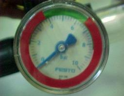
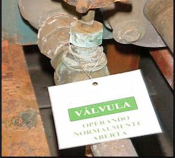
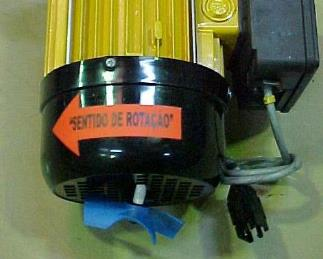
Exemplos originais dos slides 29–31. As fotos têm a resolução disponível nos anexos.
Estruturar a prevenção
Avaliar equipamentos, restaurar condições e organizar informações permite escolher ações de manutenção coerentes com a criticidade e a estratégia da empresa.
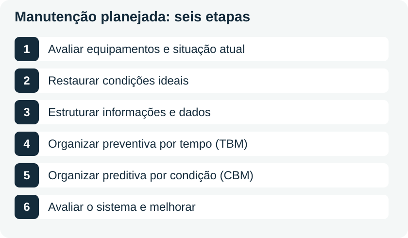
A rotina do operador fornece sinais sobre o estado do equipamento. A equipe de manutenção usa esses sinais, o histórico e o diagnóstico para planejar e executar intervenções especializadas.
Escolher, testar e sustentar
Pequenos grupos multidisciplinares selecionam um problema, analisam os fatos, implementam uma ação e verificam seu efeito.
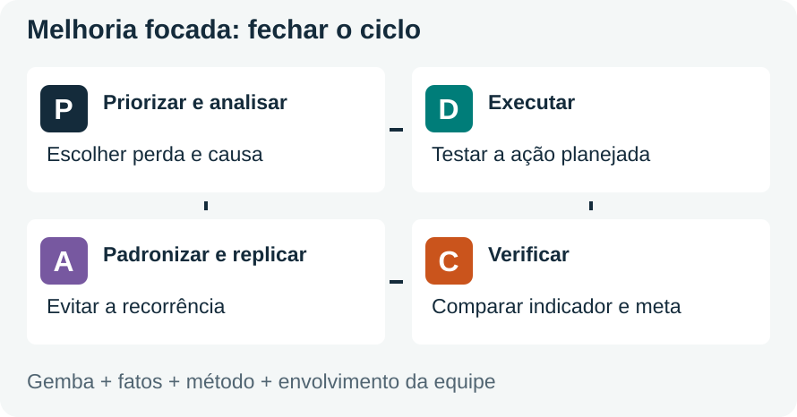
Concentra uma equipe, por um período curto e delimitado, em um setor ou operação com objetivos definidos. Nos exercícios, o exemplo é uma semana. O acompanhamento posterior sustenta o ganho.
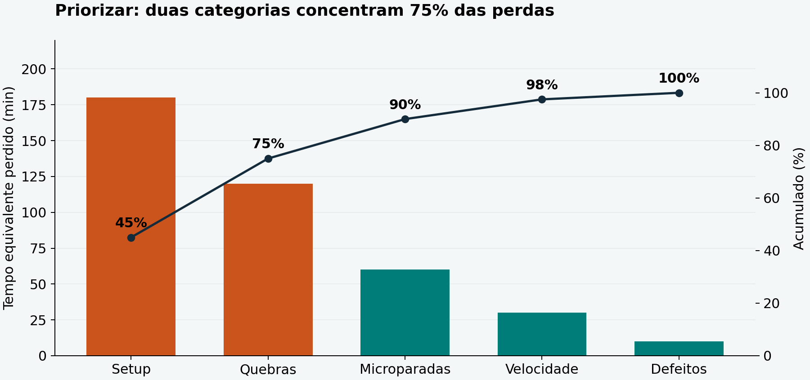
Medir para orientar a melhoria
O OEE combina disponibilidade, desempenho e qualidade. Na aula, desempenho também aparece como “atuação”, e o indicador como IROG.
Use os fatores como frações de 0 a 1. Multiplique o resultado por 100 para expressar em porcentagem.
Tempo em operação ÷ tempo de produção planejado.
Produção total ÷ (tempo em operação × taxa ideal).
Peças boas na primeira passagem ÷ produção total.
Dois turnos de 8 h somam 960 min. Seguindo a convenção do exemplo, os 40 min de pausas/manutenção programada ficam fora do tempo destinado à produção: 920 min. Durante esse período, 40 min de avarias e 80 min de setup deixam 800 min em operação.
A taxa ideal é 2 peças/min. Foram produzidas 800 peças, das quais 10 foram rejeitadas e 6 exigiram retrabalho: 784 boas na primeira passagem, considerando esses grupos sem sobreposição.
| Fator | Cálculo | Resultado |
|---|---|---|
| Disponibilidade | 800 ÷ 920 | 86,96% |
| Desempenho | 800 ÷ (800 × 2) | 50,00% |
| Qualidade | 784 ÷ 800 | 98,00% |
| OEE | (800/920) × 0,50 × 0,98 | 42,61% |
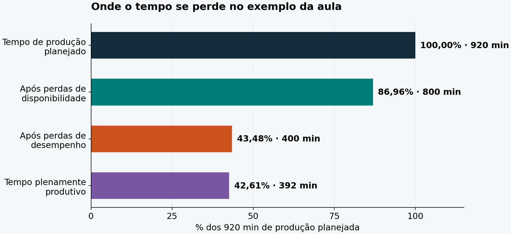
Ampliação didática · explore um cenário
Mova um fator por vez. Os controles começam nos valores do exemplo. Eles representam percentuais hipotéticos, sem recalcular os registros de produção.
Sustentar a mudança
A implantação parte do compromisso da direção, cria estrutura e metas, desenvolve os pilares e consolida os resultados.
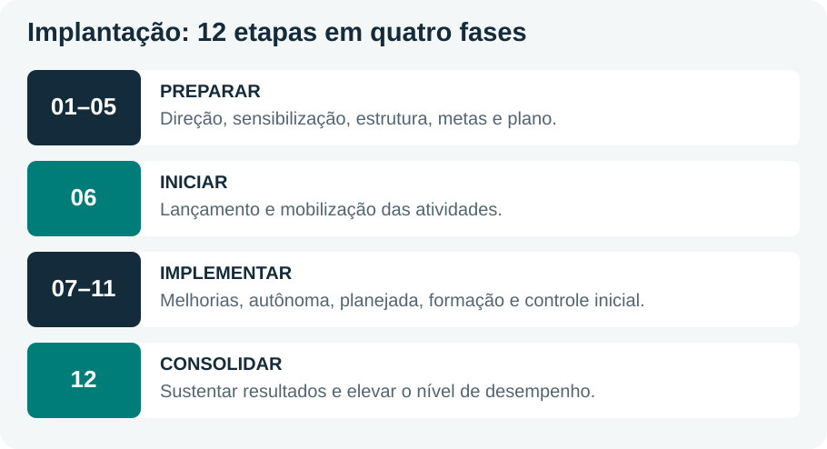
Síntese dos cinco níveis culturais descritos na aula.
Lean/TPS: a confiabilidade dos equipamentos ajuda a manter o fluxo. Teoria das Restrições: olhar os gargalos evita melhorar uma máquina sem efeito no resultado do sistema.
WCM: o material relaciona TPM a abordagens mais amplas de excelência produtiva. A sigla aparece com denominações diferentes nos anexos; sua relação com TPM deve ser lida no contexto de cada modelo.
Qual equipamento limita o resultado? Qual perda pesa mais? Quais condições básicas faltam? Quem participa? Como medir e sustentar a melhoria?
Observar a condição real permite reconhecer perdas. Dados e equipes orientam a escolha da ação. A verificação demonstra o efeito. Padronização, treinamento e planejamento ajudam a manter o resultado.
Autoestudo
Tente responder antes de abrir. As questões com “Aplicação” integram os conceitos em uma situação prática.
18 questões de recuperação direta do conteúdo e 6 de aplicação/integração. As respostas comentadas podem ser abertas individualmente ou impressas.
Envolve a eficácia econômica ao longo da vida do equipamento, um conjunto de atividades de prevenção e melhoria, e a participação dos departamentos e níveis hierárquicos.
Falhas tornam o fluxo imprevisível. Ao reduzir quebras e defeitos, a TPM ajuda a sustentar o fluxo com menos estoques intermediários.
É uma direção de melhoria que incentiva a eliminação das causas das falhas. As decisões concretas também precisam considerar viabilidade, custo e risco.
Leva problemas de acesso, inspeção, limpeza, confiabilidade e manutenção ao projeto e à seleção de novos equipamentos.
Uma melhoria pode exigir simultaneamente limpeza autônoma, mudança no plano preventivo, treinamento e controle das condições de qualidade.
Por exemplo, corrigindo atrasos de compra de peças ou de informações que prolongam uma parada. A tarefa de apoio afeta o fluxo da produção.
Quebras: disponibilidade. Pequenas paradas: desempenho. Retrabalho: qualidade. A organização deve manter critérios consistentes de classificação para evitar dupla contagem.
O setup consome tempo em que a produção planejada está parada para troca e ajuste. Na velocidade reduzida, o equipamento funciona abaixo do ritmo ideal.
Pequenas paradas, ligadas ao desempenho. Investigar a sujeira como causa e avaliar limpeza, acesso, padrões de inspeção e outras causas possíveis.
A retirada de sujeira torna visíveis vazamentos, folgas, desgaste e outras anomalias antes ocultas, além de aproximar o operador da condição do equipamento.
Azul: anomalia que o operador tem competência e recursos para resolver dentro das tarefas autorizadas. Vermelha: exige apoio da manutenção. As cores são a convenção desta aula.
Registrar, identificar e comunicar à manutenção, respeitando o procedimento da empresa. A autonomia depende de treinamento, autorização e condições de segurança.
Avaliar a situação; restaurar condições ideais; estruturar informações e dados; organizar preventiva por tempo; organizar preditiva por condição; avaliar e melhorar o sistema.
Os operadores conservam condições básicas e detectam anomalias nas rotinas autorizadas. A manutenção estrutura planos, dados, diagnósticos e intervenções que exigem especialização.
É necessário investigar a causa. Especificação da vedação, condição de montagem, procedimento de partida e inspeções podem influenciar o problema. Definir a ação a partir dos fatos.
Ordena as perdas por impacto e permite concentrar esforços nas maiores contribuições. A proporção 80/20 é uma referência, não uma regra numérica obrigatória.
Verificar os resultados, prevenir recorrência, atualizar padrões e treinamento e replicar a solução onde as condições forem equivalentes.
(180 + 120) / 400 = 75% do tempo equivalente perdido. Isso sugere prioridade, sujeita à análise de criticidade, segurança e custo-benefício.
(920 − 120) / 920 = 86,96%. O denominador é o tempo de produção planejado (920 min). O valor 120 min é a parada, e não o tempo de referência.
O OEE considera peças boas na primeira passagem. Neste exemplo, 800 − 10 − 6 = 784 peças boas, sem sobreposição entre os grupos informados.
OEE = (800/920) × 0,70 × 0,98 = 59,65%. É um cenário hipotético para estudar o efeito do desempenho.
Preparatória (etapas 1–5), inicial (6), implementação (7–11) e consolidação (12). O prazo citado no material é orientativo.
O terceiro nível descrito nos slides: aceitação do problema sem domínio do método. Capacitação e projetos acompanhados ajudam a avançar.
Formar uma equipe, definir o escopo de medição e observar as perdas no local. Restaurar condições básicas e escolher um problema prioritário com dados e meta verificável.
Retomar os materiais
Os links abaixo foram indicados nos anexos. Os vídeos complementam a leitura e dependem de conexão à internet.
Observar como mudanças de rotina, participação e indicadores aparecem no caso. Registrar os resultados com o contexto e o período apresentados.
Abrir vídeoRelacionar objetivos, pilares, fases e ciclo de vida do equipamento ao resumo.
Abrir vídeoTrechos propostos nos exercícios: 0–10 min (motivação e início) e 20–30 min (manutenção planejada e resultados).
Abrir vídeoRelacionar cada senso à identificação de anomalias, padronização e confiabilidade dos registros.
Abrir vídeoIdentificar os limites da manutenção autônoma e sua integração com a estrutura da manutenção.
Abrir vídeoRoteiros derivados dos exercícios. As alternativas e os resultados numéricos dos vídeos não foram tratados como fatos verificados neste resumo.
O conteúdo foi reorganizado por conceitos, sem reproduzir os slides em sequência. Ajustaram-se a datação histórica e as fórmulas de disponibilidade/desempenho. O resumo adota “Manutenção Produtiva Total” para TPM e usa nomenclatura consistente dos pilares. A sequência de manutenção autônoma segue o slide 26; a variação de nome da etapa 5 no esquema detalhado está indicada. Acréscimos: Pareto com dados fictícios, gráfico de tempos equivalentes, simulador de percentuais e questões integradoras. As cores das etiquetas seguem a convenção dos slides. Créditos completos dos recursos no arquivo creditos.md.